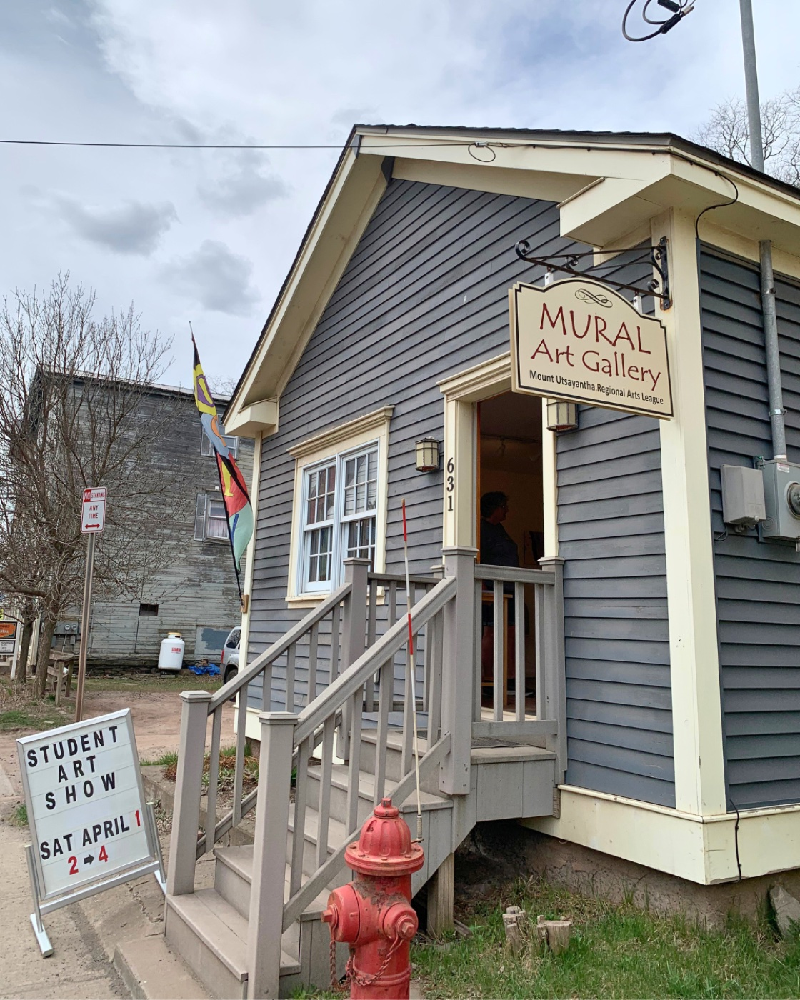

Local Attractions
Markets, museums, galleries, and trails — the village runs on more than books.

Hobart Community Farmers' Market
Every Friday from June through September, 4–7 pm along the Mill Pond near the Stamford Town Hall. Local produce, baked goods, meats, and crafts, plus pop-up readings, music, children's activities, and "Movies Under the Stars" after dark.
Visit the Market
Hobart Historical Society
Preserving the story of Hobart and the surrounding Delaware County — from its days as Waterville through the railroad era to the book village it is today. Photographs, artifacts, and local history for the curious visitor.
Learn More
Catskill Scenic Rail Trail
A 26-mile trail that passes right through Hobart along Railroad Avenue, behind Main Street. It runs from Bloomville through South Kortright, Stamford, Grand Gorge, and Roxbury to Margaretville — open year-round for hiking, biking, horseback riding, snowmobiling, and cross-country skiing.
Plan a Walk
MURAL Art Gallery
The Mt. Utsayantha Regional Arts League has displayed and promoted the work of local artists and artisans since 1983. Its gallery and gift shop at 631 Main Street, next to the Historic Hobart Inn, hosts rotating exhibitions with Saturday-afternoon receptions.
See the Gallery
The Sheep's Nest
Embellishments for the home in a country-French, English-cottage, and vintage-industrial style. A lovely browse for the home between bookshop stops.
Visit the Shop
Second Wind Furniture
Where they refinish, restore, repurpose, recycle, and resell furniture, antiques, curiosities, and useful stuff. Open when the "Open" flag is out, or by appointment April through December.
Visit the Shop